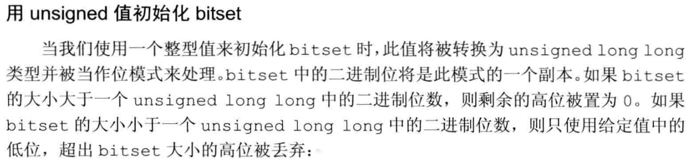
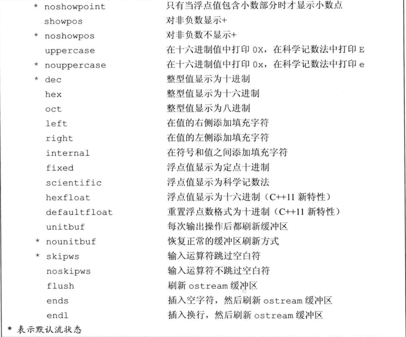

<!DOCTYPE HTML>
<html lang="zh-hans" >
    <head>
        <meta charset="UTF-8">
        <title>08_标准库特殊设施 · docs.ozy</title>
        <meta http-equiv="X-UA-Compatible" content="IE=edge" />
        <meta name="description" content="">
        <meta name="generator" content="HonKit 6.0.3">
        <meta name="author" content="ozy">
        
        
    
    <link rel="stylesheet" href="../../../gitbook/style.css">

    
            
                
                <link rel="stylesheet" href="../../../gitbook/gitbook-plugin-search-pro/search.css">
                
            
                
                <link rel="stylesheet" href="../../../gitbook/gitbook-plugin-chapter-fold/chapter-fold.css">
                
            
                
                <link rel="stylesheet" href="../../../gitbook/gitbook-plugin-expandable-chapters/expandable-chapters.css">
                
            
                
                <link rel="stylesheet" href="../../../gitbook/gitbook-plugin-anchor-navigation-ex/style/plugin.css">
                
            
                
                <link rel="stylesheet" href="../../../gitbook/gitbook-plugin-code/plugin.css">
                
            
                
                <link rel="stylesheet" href="../../../gitbook/gitbook-plugin-page-treeview-simple/style.css">
                
            
                
                <link rel="stylesheet" href="../../../gitbook/gitbook-plugin-flexible-alerts/style.css">
                
            
                
                <link rel="stylesheet" href="../../../gitbook/honkit-plugin-tbfed-pagefooter/footer.css">
                
            
                
                <link rel="stylesheet" href="../../../gitbook/gitbook-plugin-versions-select/plugin.css">
                
            
                
                <link rel="stylesheet" href="../../../gitbook/honkit-plugin-add-giscus/giscus.css">
                
            
                
                <link rel="stylesheet" href="../../../gitbook/@honkit/honkit-plugin-highlight/website.css">
                
            
                
                <link rel="stylesheet" href="../../../gitbook/@honkit/honkit-plugin-fontsettings/website.css">
                
            
        

    

    
        
        <link rel="stylesheet" href="../../../styles/website.css">
        
    
        
    
        
    
        
    
        
    

        
    
    
    <meta name="HandheldFriendly" content="true"/>
    <meta name="viewport" content="width=device-width, initial-scale=1, user-scalable=no">
    <meta name="apple-mobile-web-app-capable" content="yes">
    <meta name="apple-mobile-web-app-status-bar-style" content="black">
    <link rel="apple-touch-icon-precomposed" sizes="152x152" href="../../../gitbook/images/apple-touch-icon-precomposed-152.png">
    <link rel="shortcut icon" href="../../../gitbook/images/favicon.ico" type="image/x-icon">

    
    <link rel="next" href="09_用于大型程序的工具.html" />
    
    
    <link rel="prev" href="07_模板与泛型编程.html" />
    

    </head>
    <body>
        
<div class="book honkit-cloak">
    <div class="book-summary">
        
            
<div id="book-search-input" role="search">
    <input type="text" placeholder="输入并搜索" />
</div>

            
                <nav role="navigation">
                


<ul class="summary">
    
    

    

    
        
        
    
        <li class="chapter " data-level="1.1" data-path="../../../">
            
                <a href="../../../">
            
                    
                    Introduction
            
                </a>
            

            
        </li>
    
        <li class="chapter " data-level="1.2" data-path="../../计算机教育中缺失的一课/">
            
                <a href="../../计算机教育中缺失的一课/">
            
                    
                    计算机教育中缺失的一课
            
                </a>
            

            
            <ul class="articles">
                
    
        <li class="chapter " data-level="1.2.1" data-path="../../计算机教育中缺失的一课/01_the_shell.html">
            
                <a href="../../计算机教育中缺失的一课/01_the_shell.html">
            
                    
                    01_the_shell
            
                </a>
            

            
        </li>
    
        <li class="chapter " data-level="1.2.2" data-path="../../计算机教育中缺失的一课/02_Shell_Tools_and_Scripting.html">
            
                <a href="../../计算机教育中缺失的一课/02_Shell_Tools_and_Scripting.html">
            
                    
                    02_Shell_Tools_and_Scripting
            
                </a>
            

            
        </li>
    
        <li class="chapter " data-level="1.2.3" data-path="../../计算机教育中缺失的一课/03_Editors_Vim.html">
            
                <a href="../../计算机教育中缺失的一课/03_Editors_Vim.html">
            
                    
                    03_Editors_Vim
            
                </a>
            

            
        </li>
    
        <li class="chapter " data-level="1.2.4" data-path="../../计算机教育中缺失的一课/04_Data_Wrangling.html">
            
                <a href="../../计算机教育中缺失的一课/04_Data_Wrangling.html">
            
                    
                    04_Data_Wrangling
            
                </a>
            

            
        </li>
    
        <li class="chapter " data-level="1.2.5" data-path="../../计算机教育中缺失的一课/05_Command-line_Environment.html">
            
                <a href="../../计算机教育中缺失的一课/05_Command-line_Environment.html">
            
                    
                    05_Command-line Environment
            
                </a>
            

            
        </li>
    
        <li class="chapter " data-level="1.2.6" data-path="../../计算机教育中缺失的一课/06_Version_Control_Git.html">
            
                <a href="../../计算机教育中缺失的一课/06_Version_Control_Git.html">
            
                    
                    06_Version_Control_Git
            
                </a>
            

            
        </li>
    
        <li class="chapter " data-level="1.2.7" data-path="../../计算机教育中缺失的一课/07_Debugging_and_Profiling.html">
            
                <a href="../../计算机教育中缺失的一课/07_Debugging_and_Profiling.html">
            
                    
                    07_Debugging and Profiling
            
                </a>
            

            
        </li>
    
        <li class="chapter " data-level="1.2.8" data-path="../../计算机教育中缺失的一课/08_Metaprogramming.html">
            
                <a href="../../计算机教育中缺失的一课/08_Metaprogramming.html">
            
                    
                    08_Metaprogramming
            
                </a>
            

            
        </li>
    

            </ul>
            
        </li>
    
        <li class="chapter " data-level="1.3" data-path="../../DataStructure_and_Algorithms/">
            
                <a href="../../DataStructure_and_Algorithms/">
            
                    
                    DataStructure_and_Algorithms
            
                </a>
            

            
            <ul class="articles">
                
    
        <li class="chapter " data-level="1.3.1" data-path="../../DataStructure_and_Algorithms/Data_structure/">
            
                <a href="../../DataStructure_and_Algorithms/Data_structure/">
            
                    
                    Data_structure
            
                </a>
            

            
            <ul class="articles">
                
    
        <li class="chapter " data-level="1.3.1.1" data-path="../../DataStructure_and_Algorithms/Data_structure/01_Introduction.html">
            
                <a href="../../DataStructure_and_Algorithms/Data_structure/01_Introduction.html">
            
                    
                    01_Introduction
            
                </a>
            

            
        </li>
    
        <li class="chapter " data-level="1.3.1.2" data-path="../../DataStructure_and_Algorithms/Data_structure/02_Linear_List.html">
            
                <a href="../../DataStructure_and_Algorithms/Data_structure/02_Linear_List.html">
            
                    
                    02_Linear_List
            
                </a>
            

            
        </li>
    
        <li class="chapter " data-level="1.3.1.3" data-path="../../DataStructure_and_Algorithms/Data_structure/03_Stack_and_Queue.html">
            
                <a href="../../DataStructure_and_Algorithms/Data_structure/03_Stack_and_Queue.html">
            
                    
                    03_Stack_and_Queue
            
                </a>
            

            
        </li>
    
        <li class="chapter " data-level="1.3.1.4" data-path="../../DataStructure_and_Algorithms/Data_structure/04_Array_and_Matrix.html">
            
                <a href="../../DataStructure_and_Algorithms/Data_structure/04_Array_and_Matrix.html">
            
                    
                    04_Array_and_Matrix
            
                </a>
            

            
        </li>
    
        <li class="chapter " data-level="1.3.1.5" data-path="../../DataStructure_and_Algorithms/Data_structure/05_Character_String.html">
            
                <a href="../../DataStructure_and_Algorithms/Data_structure/05_Character_String.html">
            
                    
                    05_Character_String
            
                </a>
            

            
        </li>
    
        <li class="chapter " data-level="1.3.1.6" data-path="../../DataStructure_and_Algorithms/Data_structure/06_Tree.html">
            
                <a href="../../DataStructure_and_Algorithms/Data_structure/06_Tree.html">
            
                    
                    06_Tree
            
                </a>
            

            
        </li>
    
        <li class="chapter " data-level="1.3.1.7" data-path="../../DataStructure_and_Algorithms/Data_structure/07_Graph.html">
            
                <a href="../../DataStructure_and_Algorithms/Data_structure/07_Graph.html">
            
                    
                    07_Graph
            
                </a>
            

            
        </li>
    
        <li class="chapter " data-level="1.3.1.8" data-path="../../DataStructure_and_Algorithms/Data_structure/08_Sort.html">
            
                <a href="../../DataStructure_and_Algorithms/Data_structure/08_Sort.html">
            
                    
                    08_Sort
            
                </a>
            

            
        </li>
    
        <li class="chapter " data-level="1.3.1.9" data-path="../../DataStructure_and_Algorithms/Data_structure/09_Search.html">
            
                <a href="../../DataStructure_and_Algorithms/Data_structure/09_Search.html">
            
                    
                    09_Search
            
                </a>
            

            
        </li>
    
        <li class="chapter " data-level="1.3.1.10" data-path="../../DataStructure_and_Algorithms/Data_structure/data_structure.html">
            
                <a href="../../DataStructure_and_Algorithms/Data_structure/data_structure.html">
            
                    
                    data_structure
            
                </a>
            

            
        </li>
    

            </ul>
            
        </li>
    
        <li class="chapter " data-level="1.3.2" data-path="../../DataStructure_and_Algorithms/Algorithms/">
            
                <a href="../../DataStructure_and_Algorithms/Algorithms/">
            
                    
                    Algorithms
            
                </a>
            

            
            <ul class="articles">
                
    
        <li class="chapter " data-level="1.3.2.1" data-path="../../DataStructure_and_Algorithms/Algorithms/01_算法在计算中的作用.html">
            
                <a href="../../DataStructure_and_Algorithms/Algorithms/01_算法在计算中的作用.html">
            
                    
                    01_算法在计算中的作用
            
                </a>
            

            
        </li>
    
        <li class="chapter " data-level="1.3.2.2" data-path="../../DataStructure_and_Algorithms/Algorithms/02_算法基础.html">
            
                <a href="../../DataStructure_and_Algorithms/Algorithms/02_算法基础.html">
            
                    
                    02_算法基础
            
                </a>
            

            
        </li>
    
        <li class="chapter " data-level="1.3.2.3" data-path="../../DataStructure_and_Algorithms/Algorithms/03_函数的增长.html">
            
                <a href="../../DataStructure_and_Algorithms/Algorithms/03_函数的增长.html">
            
                    
                    03_函数的增长
            
                </a>
            

            
        </li>
    
        <li class="chapter " data-level="1.3.2.4" data-path="../../DataStructure_and_Algorithms/Algorithms/04_分治策略.html">
            
                <a href="../../DataStructure_and_Algorithms/Algorithms/04_分治策略.html">
            
                    
                    04_分治策略
            
                </a>
            

            
        </li>
    
        <li class="chapter " data-level="1.3.2.5" data-path="../../DataStructure_and_Algorithms/Algorithms/15_动态规划.html">
            
                <a href="../../DataStructure_and_Algorithms/Algorithms/15_动态规划.html">
            
                    
                    15_动态规划
            
                </a>
            

            
        </li>
    
        <li class="chapter " data-level="1.3.2.6" data-path="../../DataStructure_and_Algorithms/Algorithms/16_贪心算法.html">
            
                <a href="../../DataStructure_and_Algorithms/Algorithms/16_贪心算法.html">
            
                    
                    16_贪心算法
            
                </a>
            

            
        </li>
    
        <li class="chapter " data-level="1.3.2.7" data-path="../../DataStructure_and_Algorithms/Algorithms/17_回溯.html">
            
                <a href="../../DataStructure_and_Algorithms/Algorithms/17_回溯.html">
            
                    
                    17_回溯
            
                </a>
            

            
        </li>
    
        <li class="chapter " data-level="1.3.2.8" data-path="../../DataStructure_and_Algorithms/Algorithms/18_分支限界.html">
            
                <a href="../../DataStructure_and_Algorithms/Algorithms/18_分支限界.html">
            
                    
                    18_分支限界
            
                </a>
            

            
        </li>
    
        <li class="chapter " data-level="1.3.2.9" data-path="../../DataStructure_and_Algorithms/Algorithms/19_NP问题.html">
            
                <a href="../../DataStructure_and_Algorithms/Algorithms/19_NP问题.html">
            
                    
                    19_NP问题
            
                </a>
            

            
        </li>
    

            </ul>
            
        </li>
    

            </ul>
            
        </li>
    
        <li class="chapter " data-level="1.4" data-path="../">
            
                <a href="../">
            
                    
                    Cpp
            
                </a>
            

            
            <ul class="articles">
                
    
        <li class="chapter " data-level="1.4.1" data-path="./">
            
                <a href="./">
            
                    
                    C++-Primer
            
                </a>
            

            
            <ul class="articles">
                
    
        <li class="chapter " data-level="1.4.1.1" data-path="01_泛型算法.html">
            
                <a href="01_泛型算法.html">
            
                    
                    01_泛型算法
            
                </a>
            

            
        </li>
    
        <li class="chapter " data-level="1.4.1.2" data-path="02_关联容器.html">
            
                <a href="02_关联容器.html">
            
                    
                    02_关联容器
            
                </a>
            

            
        </li>
    
        <li class="chapter " data-level="1.4.1.3" data-path="03_动态内存.html">
            
                <a href="03_动态内存.html">
            
                    
                    03_动态内存
            
                </a>
            

            
        </li>
    
        <li class="chapter " data-level="1.4.1.4" data-path="04_拷贝控制.html">
            
                <a href="04_拷贝控制.html">
            
                    
                    04_拷贝控制
            
                </a>
            

            
        </li>
    
        <li class="chapter " data-level="1.4.1.5" data-path="05_重载运算与类型转换.html">
            
                <a href="05_重载运算与类型转换.html">
            
                    
                    05_重载运算与类型转换
            
                </a>
            

            
        </li>
    
        <li class="chapter " data-level="1.4.1.6" data-path="06_面向对象程序设计.html">
            
                <a href="06_面向对象程序设计.html">
            
                    
                    06_面向对象程序设计
            
                </a>
            

            
        </li>
    
        <li class="chapter " data-level="1.4.1.7" data-path="07_模板与泛型编程.html">
            
                <a href="07_模板与泛型编程.html">
            
                    
                    07_模板与泛型编程
            
                </a>
            

            
        </li>
    
        <li class="chapter active" data-level="1.4.1.8" data-path="08_标准库特殊设施.html">
            
                <a href="08_标准库特殊设施.html">
            
                    
                    08_标准库特殊设施
            
                </a>
            

            
        </li>
    
        <li class="chapter " data-level="1.4.1.9" data-path="09_用于大型程序的工具.html">
            
                <a href="09_用于大型程序的工具.html">
            
                    
                    09_用于大型程序的工具
            
                </a>
            

            
        </li>
    
        <li class="chapter " data-level="1.4.1.10" data-path="10_特殊工具与技术.html">
            
                <a href="10_特殊工具与技术.html">
            
                    
                    10_特殊工具与技术
            
                </a>
            

            
        </li>
    
        <li class="chapter " data-level="1.4.1.11" data-path="11_lambda表达式的类型.html">
            
                <a href="11_lambda表达式的类型.html">
            
                    
                    11_lambda表达式的类型
            
                </a>
            

            
        </li>
    
        <li class="chapter " data-level="1.4.1.12" data-path="12_nullptr.html">
            
                <a href="12_nullptr.html">
            
                    
                    12_nullptr
            
                </a>
            

            
        </li>
    

            </ul>
            
        </li>
    
        <li class="chapter " data-level="1.4.2" data-path="../Effective-Modern-C++/">
            
                <a href="../Effective-Modern-C++/">
            
                    
                    Effective-Modern-C++
            
                </a>
            

            
            <ul class="articles">
                
    
        <li class="chapter " data-level="1.4.2.1" data-path="../Effective-Modern-C++/CHAPTER_1_Deducing_Types.html">
            
                <a href="../Effective-Modern-C++/CHAPTER_1_Deducing_Types.html">
            
                    
                    CHAPTER_1_Deducing_Types
            
                </a>
            

            
        </li>
    
        <li class="chapter " data-level="1.4.2.2" data-path="../Effective-Modern-C++/CHAPTER_2_auto.html">
            
                <a href="../Effective-Modern-C++/CHAPTER_2_auto.html">
            
                    
                    CHAPTER_2_auto
            
                </a>
            

            
        </li>
    
        <li class="chapter " data-level="1.4.2.3" data-path="../Effective-Modern-C++/CHAPTER_3_Moving_to_Modern_C++.html">
            
                <a href="../Effective-Modern-C++/CHAPTER_3_Moving_to_Modern_C++.html">
            
                    
                    CHAPTER_3_Moving_to_Modern_C++
            
                </a>
            

            
        </li>
    
        <li class="chapter " data-level="1.4.2.4" data-path="../Effective-Modern-C++/CHAPTER_4_Smart_Pointers.html">
            
                <a href="../Effective-Modern-C++/CHAPTER_4_Smart_Pointers.html">
            
                    
                    CHAPTER_4_Smart_Pointers
            
                </a>
            

            
        </li>
    
        <li class="chapter " data-level="1.4.2.5" data-path="../Effective-Modern-C++/CHAPTER_5_RValue_References,Move_Semantics_and_Perfect_Forwarding.html">
            
                <a href="../Effective-Modern-C++/CHAPTER_5_RValue_References,Move_Semantics_and_Perfect_Forwarding.html">
            
                    
                    CHAPTER_5_RValue_References,Move_Semantics_and_Perfect_Forwarding
            
                </a>
            

            
        </li>
    
        <li class="chapter " data-level="1.4.2.6" data-path="../Effective-Modern-C++/CHAPTER_6_Lambda_Expressions.html">
            
                <a href="../Effective-Modern-C++/CHAPTER_6_Lambda_Expressions.html">
            
                    
                    CHAPTER_6_Lambda_Expressions
            
                </a>
            

            
        </li>
    

            </ul>
            
        </li>
    
        <li class="chapter " data-level="1.4.3" data-path="../Modern-Cpp-templates-tutorial/">
            
                <a href="../Modern-Cpp-templates-tutorial/">
            
                    
                    Modern-Cpp-templates-tutorial
            
                </a>
            

            
            <ul class="articles">
                
    
        <li class="chapter " data-level="1.4.3.1" data-path="../Modern-Cpp-templates-tutorial/01_函数模板.html">
            
                <a href="../Modern-Cpp-templates-tutorial/01_函数模板.html">
            
                    
                    01_函数模板
            
                </a>
            

            
        </li>
    
        <li class="chapter " data-level="1.4.3.2" data-path="../Modern-Cpp-templates-tutorial/02_类模板.html">
            
                <a href="../Modern-Cpp-templates-tutorial/02_类模板.html">
            
                    
                    02_类模板
            
                </a>
            

            
        </li>
    

            </ul>
            
        </li>
    
        <li class="chapter " data-level="1.4.4" data-path="../Pre-knowledge/">
            
                <a href="../Pre-knowledge/">
            
                    
                    Pre-knowledge
            
                </a>
            

            
            <ul class="articles">
                
    
        <li class="chapter " data-level="1.4.4.1" data-path="../Pre-knowledge/01_Element-knowledge.html">
            
                <a href="../Pre-knowledge/01_Element-knowledge.html">
            
                    
                    01_Element-knowledge
            
                </a>
            

            
        </li>
    
        <li class="chapter " data-level="1.4.4.2" data-path="../Pre-knowledge/02_Pointer_and_Reference.html">
            
                <a href="../Pre-knowledge/02_Pointer_and_Reference.html">
            
                    
                    02_Pointer_and_Reference
            
                </a>
            

            
        </li>
    
        <li class="chapter " data-level="1.4.4.3" data-path="../Pre-knowledge/03_Class_and_Object.html">
            
                <a href="../Pre-knowledge/03_Class_and_Object.html">
            
                    
                    03_Class_and_Object
            
                </a>
            

            
        </li>
    
        <li class="chapter " data-level="1.4.4.4" data-path="../Pre-knowledge/04_Default_Member_Function.html">
            
                <a href="../Pre-knowledge/04_Default_Member_Function.html">
            
                    
                    04_Default_Member_Function
            
                </a>
            

            
        </li>
    
        <li class="chapter " data-level="1.4.4.5" data-path="../Pre-knowledge/05_Conversion_and_Namespace.html">
            
                <a href="../Pre-knowledge/05_Conversion_and_Namespace.html">
            
                    
                    05_Conversion_and_Namespace
            
                </a>
            

            
        </li>
    
        <li class="chapter " data-level="1.4.4.6" data-path="../Pre-knowledge/06_Inheritance_and_Virtual.html">
            
                <a href="../Pre-knowledge/06_Inheritance_and_Virtual.html">
            
                    
                    06_Inheritance_and_Virtual
            
                </a>
            

            
        </li>
    
        <li class="chapter " data-level="1.4.4.7" data-path="../Pre-knowledge/07_Polymorphism.html">
            
                <a href="../Pre-knowledge/07_Polymorphism.html">
            
                    
                    07_Polymorphism
            
                </a>
            

            
        </li>
    
        <li class="chapter " data-level="1.4.4.8" data-path="../Pre-knowledge/08_Relationship_of_Class.html">
            
                <a href="../Pre-knowledge/08_Relationship_of_Class.html">
            
                    
                    08_Relationship_of_Class
            
                </a>
            

            
        </li>
    
        <li class="chapter " data-level="1.4.4.9" data-path="../Pre-knowledge/09_Diamond_Inheritance.html">
            
                <a href="../Pre-knowledge/09_Diamond_Inheritance.html">
            
                    
                    09_Diamond_Inheritance
            
                </a>
            

            
        </li>
    
        <li class="chapter " data-level="1.4.4.10" data-path="../Pre-knowledge/10_dynamic_cast.html">
            
                <a href="../Pre-knowledge/10_dynamic_cast.html">
            
                    
                    10_dynamic_cast
            
                </a>
            

            
        </li>
    
        <li class="chapter " data-level="1.4.4.11" data-path="../Pre-knowledge/11_Expressions.html">
            
                <a href="../Pre-knowledge/11_Expressions.html">
            
                    
                    11_Expressions
            
                </a>
            

            
        </li>
    
        <li class="chapter " data-level="1.4.4.12" data-path="../Pre-knowledge/12_Singleton_Pattern.html">
            
                <a href="../Pre-knowledge/12_Singleton_Pattern.html">
            
                    
                    12_Singleton_Pattern
            
                </a>
            

            
        </li>
    
        <li class="chapter " data-level="1.4.4.13" data-path="../Pre-knowledge/13_static.html">
            
                <a href="../Pre-knowledge/13_static.html">
            
                    
                    13_static
            
                </a>
            

            
        </li>
    
        <li class="chapter " data-level="1.4.4.14" data-path="../Pre-knowledge/14_virtual.html">
            
                <a href="../Pre-knowledge/14_virtual.html">
            
                    
                    14_virtual
            
                </a>
            

            
        </li>
    
        <li class="chapter " data-level="1.4.4.15" data-path="../Pre-knowledge/15_Miscellaneous.html">
            
                <a href="../Pre-knowledge/15_Miscellaneous.html">
            
                    
                    15_Miscellaneous
            
                </a>
            

            
        </li>
    

            </ul>
            
        </li>
    

            </ul>
            
        </li>
    
        <li class="chapter " data-level="1.5" data-path="../../计算机组成原理/">
            
                <a href="../../计算机组成原理/">
            
                    
                    计算机组成原理
            
                </a>
            

            
            <ul class="articles">
                
    
        <li class="chapter " data-level="1.5.1" data-path="../../计算机组成原理/计算机组成原理基础知识.html">
            
                <a href="../../计算机组成原理/计算机组成原理基础知识.html">
            
                    
                    计算机组成原理基础知识
            
                </a>
            

            
        </li>
    
        <li class="chapter " data-level="1.5.2" data-path="../../计算机组成原理/计算机组成原理基础知识（简答版）.html">
            
                <a href="../../计算机组成原理/计算机组成原理基础知识（简答版）.html">
            
                    
                    计算机组成原理基础知识（简答版）
            
                </a>
            

            
        </li>
    

            </ul>
            
        </li>
    
        <li class="chapter " data-level="1.6" data-path="../../Operating_System/">
            
                <a href="../../Operating_System/">
            
                    
                    Operating System
            
                </a>
            

            
            <ul class="articles">
                
    
        <li class="chapter " data-level="1.6.1" data-path="../../Operating_System/01_概论.html">
            
                <a href="../../Operating_System/01_概论.html">
            
                    
                    01_概论
            
                </a>
            

            
        </li>
    
        <li class="chapter " data-level="1.6.2" data-path="../../Operating_System/02_进程管理.html">
            
                <a href="../../Operating_System/02_进程管理.html">
            
                    
                    02_进程管理
            
                </a>
            

            
        </li>
    
        <li class="chapter " data-level="1.6.3" data-path="../../Operating_System/03_中断和处理器调度.html">
            
                <a href="../../Operating_System/03_中断和处理器调度.html">
            
                    
                    03_中断和处理器调度
            
                </a>
            

            
        </li>
    
        <li class="chapter " data-level="1.6.4" data-path="../../Operating_System/04_互斥同步与通讯.html">
            
                <a href="../../Operating_System/04_互斥同步与通讯.html">
            
                    
                    04_互斥同步与通讯
            
                </a>
            

            
        </li>
    
        <li class="chapter " data-level="1.6.5" data-path="../../Operating_System/05_死锁与饥饿.html">
            
                <a href="../../Operating_System/05_死锁与饥饿.html">
            
                    
                    05_死锁与饥饿
            
                </a>
            

            
        </li>
    
        <li class="chapter " data-level="1.6.6" data-path="../../Operating_System/06_主存管理.html">
            
                <a href="../../Operating_System/06_主存管理.html">
            
                    
                    06_主存管理
            
                </a>
            

            
        </li>
    
        <li class="chapter " data-level="1.6.7" data-path="../../Operating_System/07_虚拟存储器管理.html">
            
                <a href="../../Operating_System/07_虚拟存储器管理.html">
            
                    
                    07_虚拟存储器管理
            
                </a>
            

            
        </li>
    
        <li class="chapter " data-level="1.6.8" data-path="../../Operating_System/08_文件与文件系统.html">
            
                <a href="../../Operating_System/08_文件与文件系统.html">
            
                    
                    08_文件与文件系统
            
                </a>
            

            
        </li>
    
        <li class="chapter " data-level="1.6.9" data-path="../../Operating_System/09_设备与IO管理.html">
            
                <a href="../../Operating_System/09_设备与IO管理.html">
            
                    
                    09_设备与IO管理
            
                </a>
            

            
        </li>
    
        <li class="chapter " data-level="1.6.10" data-path="../../Operating_System/review.html">
            
                <a href="../../Operating_System/review.html">
            
                    
                    review
            
                </a>
            

            
        </li>
    

            </ul>
            
        </li>
    

    

    <li class="divider"></li>

    <li>
        <a href="https://github.com/honkit/honkit" target="blank" class="gitbook-link">
            本书使用 HonKit 发布
        </a>
    </li>
</ul>


                </nav>
            
        
    </div>

    <div class="book-body">
        
            <div class="body-inner">
                
                    

<div class="book-header" role="navigation">
    

    <!-- Title -->
    <h1>
        <i class="fa fa-circle-o-notch fa-spin"></i>
        <a href="../../.." >08_标准库特殊设施</a>
    </h1>
</div>


                    <div class="page-wrapper" tabindex="-1" role="main">
                        <div class="page-inner">
                            
<div id="book-search-results">
    <div class="search-noresults">
    
                                <section class="normal markdown-section">
                                
                                <html><head></head><body><div id="anchor-navigation-ex-navbar"><i class="fa fa-navicon"></i><ul><li><span class="title-icon "></span><a href="#标准库特殊设施"><b></b>标准库特殊设施</a></li><ul><li><span class="title-icon "></span><a href="#1-tuple类型"><b></b>1. tuple类型</a></li><li><span class="title-icon "></span><a href="#2-bitset-类型"><b></b>2. bitset 类型</a></li><li><span class="title-icon "></span><a href="#3-正则表达式"><b></b>3. 正则表达式</a></li><li><span class="title-icon "></span><a href="#4-随机数"><b></b>4. 随机数</a></li><li><span class="title-icon "></span><a href="#5-io库再探"><b></b>5. IO库再探</a></li><li><span class="title-icon "></span><a href="#6-附录"><b></b>6. 附录</a></li></ul></ul></div><a href="#标准库特殊设施" id="anchorNavigationExGoTop"><i class="fa fa-arrow-up"></i></a><div class="treeview__container"><ul>
<li><div><a href="#标准库特殊设施">标准库特殊设施</a><i class="level__parent level__item level__parent--opened" state="opened" onclick="var curState = this.getAttribute('state');var nextState = curState === 'opened' ? 'hidden' : 'opened';this.setAttribute('state', nextState);this.className = this.className.split(curState).join(nextState);var list = this.parentNode.nextElementSibling;if (nextState === 'hidden') {    list.style.display = 'none';} else {    list.style.display = 'block';}"></i></div>
<ul>
<li><div><a href="#1-tuple类型">1. tuple类型</a><i class="level__parent level__item level__parent--opened" state="opened" onclick="var curState = this.getAttribute('state');var nextState = curState === 'opened' ? 'hidden' : 'opened';this.setAttribute('state', nextState);this.className = this.className.split(curState).join(nextState);var list = this.parentNode.nextElementSibling;if (nextState === 'hidden') {    list.style.display = 'none';} else {    list.style.display = 'block';}"></i></div>
<ul>
<li> 
<ul>
<li><div><a href="#11-定义和初始化tuple">1.1 定义和初始化tuple</a><i class="level__parent level__item level__parent--opened" state="opened" onclick="var curState = this.getAttribute('state');var nextState = curState === 'opened' ? 'hidden' : 'opened';this.setAttribute('state', nextState);this.className = this.className.split(curState).join(nextState);var list = this.parentNode.nextElementSibling;if (nextState === 'hidden') {    list.style.display = 'none';} else {    list.style.display = 'block';}"></i></div>
<ul>
<li> 
<ul>
<li><div><a href="#访问tuple的成员">访问tuple的成员</a><i></i></div></li>
<li><div><a href="#关系和相等运算符">关系和相等运算符</a><i></i></div></li>
</ul></li>
</ul></li>
<li><div><a href="#12-使用tuple返回多个值">1.2 使用tuple返回多个值</a><i></i></div></li>
</ul></li>
</ul></li>
<li><div><a href="#2-bitset-类型">2. bitset 类型</a><i class="level__parent level__item level__parent--opened" state="opened" onclick="var curState = this.getAttribute('state');var nextState = curState === 'opened' ? 'hidden' : 'opened';this.setAttribute('state', nextState);this.className = this.className.split(curState).join(nextState);var list = this.parentNode.nextElementSibling;if (nextState === 'hidden') {    list.style.display = 'none';} else {    list.style.display = 'block';}"></i></div>
<ul>
<li> 
<ul>
<li><div><a href="#21-定义和初始化bitset">2.1 定义和初始化bitset</a><i></i></div></li>
<li><div><a href="#22-bitset操作">2.2 bitset操作</a><i></i></div></li>
</ul></li>
</ul></li>
<li><div><a href="#3-正则表达式">3. 正则表达式</a><i class="level__parent level__item level__parent--opened" state="opened" onclick="var curState = this.getAttribute('state');var nextState = curState === 'opened' ? 'hidden' : 'opened';this.setAttribute('state', nextState);this.className = this.className.split(curState).join(nextState);var list = this.parentNode.nextElementSibling;if (nextState === 'hidden') {    list.style.display = 'none';} else {    list.style.display = 'block';}"></i></div>
<ul>
<li> 
<ul>
<li><div><a href="#31-基本使用">3.1 基本使用</a><i class="level__parent level__item level__parent--opened" state="opened" onclick="var curState = this.getAttribute('state');var nextState = curState === 'opened' ? 'hidden' : 'opened';this.setAttribute('state', nextState);this.className = this.className.split(curState).join(nextState);var list = this.parentNode.nextElementSibling;if (nextState === 'hidden') {    list.style.display = 'none';} else {    list.style.display = 'block';}"></i></div>
<ul>
<li> 
<ul>
<li><div><a href="#指定-regex-对象的选项">指定 regex 对象的选项</a><i></i></div></li>
<li><div><a href="#指定或使用正则表达式时的错误">指定或使用正则表达式时的错误</a><i></i></div></li>
<li><div><a href="#正则表达式类和输入序列类型必须匹配">正则表达式类和输入序列类型必须匹配</a><i></i></div></li>
</ul></li>
</ul></li>
<li><div><a href="#32-匹配与-regex-迭代器类型">3.2 匹配与 Regex 迭代器类型</a><i class="level__parent level__item level__parent--opened" state="opened" onclick="var curState = this.getAttribute('state');var nextState = curState === 'opened' ? 'hidden' : 'opened';this.setAttribute('state', nextState);this.className = this.className.split(curState).join(nextState);var list = this.parentNode.nextElementSibling;if (nextState === 'hidden') {    list.style.display = 'none';} else {    list.style.display = 'block';}"></i></div>
<ul>
<li> 
<ul>
<li><div><a href="#使用匹配数据">使用匹配数据</a><i></i></div></li>
</ul></li>
</ul></li>
<li><div><a href="#33-使用子表达式">3.3 使用子表达式</a><i class="level__parent level__item level__parent--opened" state="opened" onclick="var curState = this.getAttribute('state');var nextState = curState === 'opened' ? 'hidden' : 'opened';this.setAttribute('state', nextState);this.className = this.className.split(curState).join(nextState);var list = this.parentNode.nextElementSibling;if (nextState === 'hidden') {    list.style.display = 'none';} else {    list.style.display = 'block';}"></i></div>
<ul>
<li> 
<ul>
<li><div><a href="#子表达式用于数据验证">子表达式用于数据验证</a><i></i></div></li>
</ul></li>
</ul></li>
<li><div><a href="#34-使用regexreplace">3.4 使用regex_replace</a><i class="level__parent level__item level__parent--opened" state="opened" onclick="var curState = this.getAttribute('state');var nextState = curState === 'opened' ? 'hidden' : 'opened';this.setAttribute('state', nextState);this.className = this.className.split(curState).join(nextState);var list = this.parentNode.nextElementSibling;if (nextState === 'hidden') {    list.style.display = 'none';} else {    list.style.display = 'block';}"></i></div>
<ul>
<li> 
<ul>
<li><div><a href="#只替换输入序列的一部分">只替换输入序列的一部分</a><i></i></div></li>
<li><div><a href="#控制匹配和格式的标志">控制匹配和格式的标志</a><i></i></div></li>
</ul></li>
</ul></li>
</ul></li>
</ul></li>
<li><div><a href="#4-随机数">4. 随机数</a><i class="level__parent level__item level__parent--opened" state="opened" onclick="var curState = this.getAttribute('state');var nextState = curState === 'opened' ? 'hidden' : 'opened';this.setAttribute('state', nextState);this.className = this.className.split(curState).join(nextState);var list = this.parentNode.nextElementSibling;if (nextState === 'hidden') {    list.style.display = 'none';} else {    list.style.display = 'block';}"></i></div>
<ul>
<li> 
<ul>
<li><div><a href="#41-随机数引擎和分布">4.1 随机数引擎和分布</a><i class="level__parent level__item level__parent--opened" state="opened" onclick="var curState = this.getAttribute('state');var nextState = curState === 'opened' ? 'hidden' : 'opened';this.setAttribute('state', nextState);this.className = this.className.split(curState).join(nextState);var list = this.parentNode.nextElementSibling;if (nextState === 'hidden') {    list.style.display = 'none';} else {    list.style.display = 'block';}"></i></div>
<ul>
<li> 
<ul>
<li><div><a href="#分布类型与引擎">分布类型与引擎</a><i></i></div></li>
<li><div><a href="#使用时间种子">使用时间种子</a><i></i></div></li>
</ul></li>
</ul></li>
<li><div><a href="#42-其他随机数分布">4.2 其他随机数分布</a><i class="level__parent level__item level__parent--opened" state="opened" onclick="var curState = this.getAttribute('state');var nextState = curState === 'opened' ? 'hidden' : 'opened';this.setAttribute('state', nextState);this.className = this.className.split(curState).join(nextState);var list = this.parentNode.nextElementSibling;if (nextState === 'hidden') {    list.style.display = 'none';} else {    list.style.display = 'block';}"></i></div>
<ul>
<li> 
<ul>
<li><div><a href="#生成随机实数">生成随机实数</a><i></i></div></li>
<li><div><a href="#生成非均匀分布的随机数">生成非均匀分布的随机数</a><i></i></div></li>
</ul></li>
</ul></li>
</ul></li>
</ul></li>
<li><div><a href="#5-io库再探">5. IO库再探</a><i class="level__parent level__item level__parent--opened" state="opened" onclick="var curState = this.getAttribute('state');var nextState = curState === 'opened' ? 'hidden' : 'opened';this.setAttribute('state', nextState);this.className = this.className.split(curState).join(nextState);var list = this.parentNode.nextElementSibling;if (nextState === 'hidden') {    list.style.display = 'none';} else {    list.style.display = 'block';}"></i></div>
<ul>
<li> 
<ul>
<li><div><a href="#51-格式化输入与输出">5.1 格式化输入与输出</a><i class="level__parent level__item level__parent--opened" state="opened" onclick="var curState = this.getAttribute('state');var nextState = curState === 'opened' ? 'hidden' : 'opened';this.setAttribute('state', nextState);this.className = this.className.split(curState).join(nextState);var list = this.parentNode.nextElementSibling;if (nextState === 'hidden') {    list.style.display = 'none';} else {    list.style.display = 'block';}"></i></div>
<ul>
<li> 
<ul>
<li><div><a href="#使用操纵符（manipulator）">使用操纵符（manipulator）</a><i></i></div></li>
<li><div><a href="#控制输入格式">控制输入格式</a><i></i></div></li>
</ul></li>
</ul></li>
<li><div><a href="#52-未格式化的输入输出操作">5.2 未格式化的输入/输出操作</a><i class="level__parent level__item level__parent--opened" state="opened" onclick="var curState = this.getAttribute('state');var nextState = curState === 'opened' ? 'hidden' : 'opened';this.setAttribute('state', nextState);this.className = this.className.split(curState).join(nextState);var list = this.parentNode.nextElementSibling;if (nextState === 'hidden') {    list.style.display = 'none';} else {    list.style.display = 'block';}"></i></div>
<ul>
<li> 
<ul>
<li><div><a href="#单字节操作">单字节操作</a><i></i></div></li>
<li><div><a href="#多字节操作">多字节操作</a><i></i></div></li>
</ul></li>
</ul></li>
<li><div><a href="#53-流随机访问">5.3 流随机访问</a><i class="level__parent level__item level__parent--opened" state="opened" onclick="var curState = this.getAttribute('state');var nextState = curState === 'opened' ? 'hidden' : 'opened';this.setAttribute('state', nextState);this.className = this.className.split(curState).join(nextState);var list = this.parentNode.nextElementSibling;if (nextState === 'hidden') {    list.style.display = 'none';} else {    list.style.display = 'block';}"></i></div>
<ul>
<li> 
<ul>
<li><div><a href="#seek和tell函数">seek和tell函数</a><i></i></div></li>
</ul></li>
</ul></li>
</ul></li>
</ul></li>
<li><div><a href="#6-附录">6. 附录</a><i class="level__parent level__item level__parent--opened" state="opened" onclick="var curState = this.getAttribute('state');var nextState = curState === 'opened' ? 'hidden' : 'opened';this.setAttribute('state', nextState);this.className = this.className.split(curState).join(nextState);var list = this.parentNode.nextElementSibling;if (nextState === 'hidden') {    list.style.display = 'none';} else {    list.style.display = 'block';}"></i></div>
<ul>
<li> 
<ul>
<li><div><a href="#61-随机数分布">6.1 随机数分布</a><i></i></div></li>
<li><div><a href="#62-随机数引擎">6.2 随机数引擎</a><i></i></div></li>
</ul></li>
</ul></li>
</ul></li>
</ul>
</div>

<p>[TOC]</p>
<h1 id="标准库特殊设施"><a name="标准库特殊设施" class="anchor-navigation-ex-anchor" href="#标准库特殊设施"><i class="fa fa-link" aria-hidden="true"></i></a>标准库特殊设施</h1>
<p>本章将介绍4个标准库设施：<code>tuple</code>、<code>bitset</code>、随机数生成及正则表达式。此外，我们还将介绍IO库中一些具有特殊目的的部分。</p>
<h2 id="1-tuple类型"><a name="1-tuple类型" class="anchor-navigation-ex-anchor" href="#1-tuple类型"><i class="fa fa-link" aria-hidden="true"></i></a>1. <code>tuple</code>类型</h2>
<blockquote>
<p>一个<code>tuple</code>可以有任意数量的成员。当我们希望将一些数据组合成单一对象，但又不想麻烦地定义一个新数据结构来表示这些数据时，<code>tuple</code>是非常有用的。</p>
</blockquote>
<p></img></p>
<h4 id="11-定义和初始化tuple"><a name="11-定义和初始化tuple" class="anchor-navigation-ex-anchor" href="#11-定义和初始化tuple"><i class="fa fa-link" aria-hidden="true"></i></a>1.1 定义和初始化<code>tuple</code></h4>
<ul>
<li>使用<code>tuple</code>的默认构造函数，它会对每个成员进行<strong>值初始化</strong>；</li>
</ul>
<pre><code class="lang-cpp">tuple&lt;<span class="hljs-type">size_t</span>, <span class="hljs-type">size_t</span>, <span class="hljs-type">size_t</span>&gt; threeD; <span class="hljs-comment">//值初始化为0</span>
</code></pre>
<ul>
<li>为每个成员提供一个初始值。<code>tuple</code>的这个构造函数是<code>explicit</code>的，
因此我们必须使用直接初始化语法：</li>
</ul>
<p>// 完整示例（可复制到 main 中运行）
// #include <regex>
// #include <string>
// #include <iostream>
// using namespace std;
// int main(){
//   string pattern = "[[:alpha:]]<em><sup><a href="#fn_c" id="reffn_c">c</a></sup>ei[[:alpha:]]</em>";
//   regex r(pattern, regex::ECMAScript);
//   string test = "receipt freind theif receive";
//   smatch m;
//   if(regex_search(test, m, r)) cout &lt;&lt; m.str() &lt;&lt; '\n';
// }</iostream></string></regex></p>
<pre><code class="lang-cpp"><span class="hljs-comment">//错误，无法从initializer_list隐式转换到tuple</span>
tuple&lt;<span class="hljs-type">size_t</span>, <span class="hljs-type">size_t</span>, <span class="hljs-type">size_t</span>&gt; threeD = {<span class="hljs-number">1</span>, <span class="hljs-number">2</span>, <span class="hljs-number">3</span>};
<span class="hljs-comment">//正确</span>
tuple&lt;<span class="hljs-type">size_t</span>, <span class="hljs-type">size_t</span>, <span class="hljs-type">size_t</span>&gt; threeD{<span class="hljs-number">1</span>, <span class="hljs-number">2</span>, <span class="hljs-number">3</span>};
</code></pre>
<ul>
<li>使用<code>make_tuple</code>函数</li>
</ul>
<pre><code class="lang-cpp"><span class="hljs-comment">//使用初始值的类型推断tuple的类型</span>
<span class="hljs-keyword">auto</span> item = <span class="hljs-built_in">make_tuple</span>(<span class="hljs-string">"0-999-78345-X"</span>, <span class="hljs-number">3</span>, <span class="hljs-number">20.00</span>);
</code></pre>
<h6 id="访问tuple的成员"><a name="访问tuple的成员" class="anchor-navigation-ex-anchor" href="#访问tuple的成员"><i class="fa fa-link" aria-hidden="true"></i></a>访问<code>tuple</code>的成员</h6>
<blockquote>
<p>使用<code>std::get</code>，显式模板实参表示访问第几个成员</p>
</blockquote>
<pre><code class="lang-cpp"><span class="hljs-keyword">auto</span> book = <span class="hljs-built_in">get</span>&lt;<span class="hljs-number">0</span>&gt;(item);<span class="hljs-comment">//0代表第一个成员</span>
</code></pre>
<blockquote>
<p>[!NOTE]</p>
<p>尖括号内的值必须是<strong>整形常量表达式</strong></p>
<p>两个类模板：tuple_size<tuple>, tuple_element<index, tuple="">.</index,></tuple></p>
</blockquote>
<pre><code class="lang-cpp"><span class="hljs-keyword">auto</span> item = <span class="hljs-built_in">make_tuple</span>(<span class="hljs-number">1</span>, <span class="hljs-number">2.0</span>, <span class="hljs-string">'c'</span>);
<span class="hljs-function"><span class="hljs-keyword">typedef</span> <span class="hljs-title">decltype</span><span class="hljs-params">(item)</span> trans</span>;<span class="hljs-comment">//使用decltype获得tuple类型</span>
<span class="hljs-type">size_t</span> sz = tuple_size&lt;trans&gt;::value; <span class="hljs-comment">//sz == 3</span>
tuple_element&lt;<span class="hljs-number">1</span>, trans&gt;::type ele = <span class="hljs-number">1.0</span>;<span class="hljs-comment">//ele: double</span>
</code></pre>
<h6 id="关系和相等运算符"><a name="关系和相等运算符" class="anchor-navigation-ex-anchor" href="#关系和相等运算符"><i class="fa fa-link" aria-hidden="true"></i></a>关系和相等运算符</h6>
<blockquote>
<p>[!NOTE]</p>
<p><code>tuple</code>逐对比较左侧和右侧的成员</p>
<ol>
<li><p>成员数量必须相同</p>
</li>
<li><p>对每对成员使用==运算符必须都是合法的</p>
</li>
<li><p>对每对成员使用&lt;运算符必须都是合法的</p>
</li>
</ol>
<p></img></p>
</blockquote>
<hr></hr>
<h4 id="12-使用tuple返回多个值"><a name="12-使用tuple返回多个值" class="anchor-navigation-ex-anchor" href="#12-使用tuple返回多个值"><i class="fa fa-link" aria-hidden="true"></i></a>1.2 使用<code>tuple</code>返回多个值</h4>
<p>综合利用上述操作即可</p>
<h2 id="2-bitset-类型"><a name="2-bitset-类型" class="anchor-navigation-ex-anchor" href="#2-bitset-类型"><i class="fa fa-link" aria-hidden="true"></i></a>2. <code>bitset</code> 类型</h2>
<blockquote>
<p><code>std::bitset</code>使得位运算的使用更为容易，并且能够处理超过最长整型类型大小的位集合。<code>bitset</code>类定义在头文件<code>bitset</code>中。</p>
</blockquote>
<h4 id="21-定义和初始化bitset"><a name="21-定义和初始化bitset" class="anchor-navigation-ex-anchor" href="#21-定义和初始化bitset"><i class="fa fa-link" aria-hidden="true"></i></a>2.1 定义和初始化<code>bitset</code></h4>
<p><code>bitset</code>是一个类模板，具有<strong>固定的大小</strong>，定义时需指定它包含多少个二进制位：</p>
<pre><code class="lang-cpp"><span class="hljs-function">bitset&lt;32&gt; <span class="hljs-title">bitvec</span><span class="hljs-params">(<span class="hljs-number">1U</span>)</span></span>; <span class="hljs-comment">//32位，低位为1，其他位为0</span>
</code></pre>
<p></img></p>
<p></img></p>
<p></img></p>
<p></img></p>
<hr></hr>
<h4 id="22-bitset操作"><a name="22-bitset操作" class="anchor-navigation-ex-anchor" href="#22-bitset操作"><i class="fa fa-link" aria-hidden="true"></i></a>2.2 <code>bitset</code>操作</h4>
<p></img></p>
<blockquote>
<p>[!NOTE]</p>
<p><code>to_ulong</code> 和 <code>to_ullong</code></p>
<p></img></p>
</blockquote>
<p></img></p>
<h2 id="3-正则表达式"><a name="3-正则表达式" class="anchor-navigation-ex-anchor" href="#3-正则表达式"><i class="fa fa-link" aria-hidden="true"></i></a>3. 正则表达式</h2>
<blockquote>
<p>正则表达式(regular expression) 是一种描述字符序列的方法，C++正则表达式库（RE库）是新标准库的一部分，它定义在头文件<code>regex</code>中</p>
</blockquote>
<p></img></p>
<h4 id="31-基本使用"><a name="31-基本使用" class="anchor-navigation-ex-anchor" href="#31-基本使用"><i class="fa fa-link" aria-hidden="true"></i></a>3.1 基本使用</h4>
<pre><code class="lang-cpp"><span class="hljs-comment">// 在英语中，ei这个组合前面只能是c，否则拼写错误</span>
<span class="hljs-comment">// 下面查找不在字符c之后的字符串ei</span>
  <span class="hljs-function">string <span class="hljs-title">pattern</span><span class="hljs-params">(<span class="hljs-string">"[^c]ei"</span>)</span></span>; 
  <span class="hljs-comment">//^在这里代表非</span>

  pattern = <span class="hljs-string">"[[:alpha:]]*"</span> + pattern + <span class="hljs-string">"[[:alpha:]]*"</span>;
  <span class="hljs-comment">//[[:alpha:]]代表字母，*匹配0个或多个</span>

  <span class="hljs-function">regex <span class="hljs-title">r</span><span class="hljs-params">(pattern)</span></span>;<span class="hljs-comment">//正则表达式</span>
  string test = <span class="hljs-string">"receipt freind theif receive"</span>;<span class="hljs-comment">//搜索对象</span>
  smatch matchs;<span class="hljs-comment">//搜索结果</span>

  <span class="hljs-comment">// 参数：从哪来(搜索对象)，到哪去(搜索结果)，做什么(regex)</span>
  <span class="hljs-keyword">if</span> (<span class="hljs-built_in">regex_search</span>(test, matchs, r)) {
    std::cout &lt;&lt; matchs.<span class="hljs-built_in">str</span>();
  }
</code></pre>
<blockquote>
<p>[!NOTE]</p>
<p><code>^</code> 在正则表达式中的作用取决于它所处的位置：</p>
<ol>
<li><strong>行首</strong>：当 <code>^</code> 在正则表达式的开头时，它表示匹配字符串的开始。例如，<code>^abc</code> 表示匹配以 "abc" 开头的字符串。</li>
<li><strong>否定字符集</strong>：当 <code>^</code> 在方括号 <code>[]</code> 内的字符集的开头时，它表示对字符集的取反（否定）。例如，<code>[^c]</code> 表示匹配任何不是 <code>c</code> 的字符。在这种情况下，<code>^</code> 的作用是将字符集中的字符进行否定。</li>
</ol>
</blockquote>
<h6 id="指定-regex-对象的选项"><a name="指定-regex-对象的选项" class="anchor-navigation-ex-anchor" href="#指定-regex-对象的选项"><i class="fa fa-link" aria-hidden="true"></i></a>指定 regex 对象的选项</h6>
<p></img></p>
<blockquote>
<p>默认情况下，ECMAScript 标志被设置</p>
</blockquote>
<p>例，<strong>使用<code>icase</code>标志查找指定具有拓展名的文件</strong>。大多数操作系统都是按大小写无关的方式识别扩展名的，这也是我们使用<code>icase</code>的原因。</p>
<pre><code class="lang-cpp"><span class="hljs-comment">// 一个或多个字母或数字后接一个'.'再接"cpp"或"cc"或"cxx"</span>
  <span class="hljs-function">regex <span class="hljs-title">r</span><span class="hljs-params">(<span class="hljs-string">"[[:alnum:]]+\\.(cpp|cc|cxx)$"</span>, regex::icase)</span></span>;
  string test1 = <span class="hljs-string">"a.cpp"</span>;
  string test2 = <span class="hljs-string">"b.cc"</span>;
  smatch match;
  <span class="hljs-keyword">if</span> (<span class="hljs-built_in">regex_search</span>(test1, match, r)) {
    cout &lt;&lt; match.<span class="hljs-built_in">str</span>();
  }
  <span class="hljs-keyword">if</span> (<span class="hljs-built_in">regex_search</span>(test2, match, r)) {
    cout &lt;&lt; <span class="hljs-string">"  "</span> &lt;&lt; match.<span class="hljs-built_in">str</span>();
  }
</code></pre>
<blockquote>
<p>[!NOTE]</p>
<ul>
<li><code>alnum</code>代表字母或数字</li>
<li><code>\\.</code>的原因: c++和regex都使用<code>\</code>作为转义字符，而<code>.</code>在regex中代表匹配任意字符，使用<code>\.</code>可以保留原意，但因为c++的原因需要使用<code>\\</code>来表示<code>\</code></li>
<li><code>$</code>在这里代表字符串末尾</li>
</ul>
</blockquote>
<h6 id="指定或使用正则表达式时的错误"><a name="指定或使用正则表达式时的错误" class="anchor-navigation-ex-anchor" href="#指定或使用正则表达式时的错误"><i class="fa fa-link" aria-hidden="true"></i></a>指定或使用正则表达式时的错误</h6>
<blockquote>
<p>[!NOTE]</p>
<p></img></p>
</blockquote>
<p>所以如果正则表达式存在错误，则会在运行时抛出错误<code>std::regex_error</code>，</p>
<p>它有一个<code>what</code>操作来描述错误，一个名为<code>code</code>的成员用来返回错误代码，<code>code</code>返回的值是由具体实现定义的。</p>
<p></img></p>
<p></img></p>
<h6 id="正则表达式类和输入序列类型必须匹配"><a name="正则表达式类和输入序列类型必须匹配" class="anchor-navigation-ex-anchor" href="#正则表达式类和输入序列类型必须匹配"><i class="fa fa-link" aria-hidden="true"></i></a>正则表达式类和输入序列类型必须匹配</h6>
<p></img></p>
<hr></hr>
<h4 id="32-匹配与-regex-迭代器类型"><a name="32-匹配与-regex-迭代器类型" class="anchor-navigation-ex-anchor" href="#32-匹配与-regex-迭代器类型"><i class="fa fa-link" aria-hidden="true"></i></a>3.2 匹配与 Regex 迭代器类型</h4>
<blockquote>
<p>我们可以使用<code>sregex_iterator</code>来获得所有匹配</p>
</blockquote>
<p></img></p>
<p></img></p>
<p>重写扩展名匹配程序:</p>
<pre><code class="lang-cpp"><span class="hljs-comment">// 一个或多个字母或数字后接一个'.'再接"cpp"或"cc"或"cxx"</span>
  <span class="hljs-function">regex <span class="hljs-title">r</span><span class="hljs-params">(<span class="hljs-string">"[[:alnum:]]+\\.(cpp|cc|cxx)"</span>, regex::icase)</span></span>;
  string test = <span class="hljs-string">"it is a1.cpp, b2.cc and c3.cxx"</span>;
  <span class="hljs-function">sregex_iterator <span class="hljs-title">it</span><span class="hljs-params">(test.begin(), test.end(), r)</span>, end_it</span>;
  <span class="hljs-keyword">while</span> (it != end_it) {
    <span class="hljs-built_in">println</span>(<span class="hljs-string">"{}"</span>, it-&gt;<span class="hljs-built_in">str</span>());
    ++it;
  }
</code></pre>
<p>现在程序输出所有匹配项：<code>a1.cpp b2.cc c3.cxx</code></p>
<blockquote>
<p>[!NOTE]</p>
<ul>
<li>空<code>sregex_iterator</code>可以当作尾后迭代器使用</li>
</ul>
</blockquote>
<h6 id="使用匹配数据"><a name="使用匹配数据" class="anchor-navigation-ex-anchor" href="#使用匹配数据"><i class="fa fa-link" aria-hidden="true"></i></a>使用匹配数据</h6>
<p>匹配类型有两个名为<code>prefix</code>和<code>suffix</code>的成员，分别返回表示输入序列中当前匹配之前和之后部分的<code>ssub_match</code>对象。的成员，一个<code>ssub_match</code>对象有两个名为<code>str</code>和<code>length</code>的成员，分别返回匹配的<code>string</code>和该<code>string</code>的大小。我们可以用这些操作重写语法程序的循环。</p>
<pre><code class="lang-cpp"><span class="hljs-keyword">while</span> (it != end_it) {
    <span class="hljs-built_in">println</span>(<span class="hljs-string">"{}"</span>, it-&gt;<span class="hljs-built_in">prefix</span>().<span class="hljs-built_in">str</span>());
    <span class="hljs-built_in">println</span>(<span class="hljs-string">"&gt;&gt;&gt;{}&lt;&lt;&lt;"</span>, it-&gt;<span class="hljs-built_in">str</span>());
    <span class="hljs-built_in">println</span>(<span class="hljs-string">"{}"</span>, it-&gt;<span class="hljs-built_in">suffix</span>().<span class="hljs-built_in">str</span>());
    ++it;
  }
</code></pre>
<p>这样程序就打印了匹配结果的上下文，还可以用<code>substr()</code>对上下文进行裁剪.</p>
<p>以下是更多有关<code>smatch</code>的操作：</p>
<p></img></p>
<hr></hr>
<h4 id="33-使用子表达式"><a name="33-使用子表达式" class="anchor-navigation-ex-anchor" href="#33-使用子表达式"><i class="fa fa-link" aria-hidden="true"></i></a>3.3 使用子表达式</h4>
<blockquote>
<p>正则表达式中的模式通常包含一个或多个<strong>子表达式 (subexpression)</strong>。一个子表达式是模式的一部分，本身也具有意义。正则表达式语法通常用括号表示子表达式。</p>
</blockquote>
<p>匹配对象除了提供匹配整体的相关信息外，还提供<strong>访问模式中每个子表达式</strong>的能力。子匹配是按位置来访问的。第一个子匹配位置为0，表示整个模式对应的匹配，随后是每个子表达式对应的匹配。</p>
<pre><code class="lang-cpp"><span class="hljs-built_in">println</span>(<span class="hljs-string">"&gt;&gt;&gt;{}&lt;&lt;&lt;"</span>, it-&gt;<span class="hljs-built_in">str</span>(<span class="hljs-number">1</span>));<span class="hljs-comment">//将上例的输出语句稍加修改</span>
<span class="hljs-comment">//输出：a1 b2 c3</span>
</code></pre>
<h6 id="子表达式用于数据验证"><a name="子表达式用于数据验证" class="anchor-navigation-ex-anchor" href="#子表达式用于数据验证"><i class="fa fa-link" aria-hidden="true"></i></a>子表达式用于数据验证</h6>
<p>例：<strong>筛选美国电话号码</strong></p>
<blockquote>
<p>语法知识</p>
</blockquote>
<p></img></p>
<blockquote>
<p>要求:</p>
<p>美国的电话号码有十位数字，包含一个区号和一个七位的本地号码。区号通常放在括号里，但这并不是必需的。剩余七位数字可以用一个短横线、一个点或是一个空格分隔，但也可以完全不用分隔符。</p>
</blockquote>
<pre><code class="lang-cpp"><span class="hljs-comment">//让我们来分步编写这个表达式</span>
<span class="hljs-comment">// 1. (\\()?   //左括号</span>
<span class="hljs-comment">// 2. (\\d{3}) //区号</span>
<span class="hljs-comment">// 3. (\\))?   //右括号</span>
<span class="hljs-comment">// 4. ([-. ])?   //分隔符</span>
<span class="hljs-comment">// 5. (\\d{3}) //号码前三位</span>
<span class="hljs-comment">// 6. ([-. ])?   //分隔符</span>
<span class="hljs-comment">// 7. (\\d{4}) //号码后四位</span>
</code></pre>
<p>下面编写代码：</p>
<pre><code class="lang-cpp">string number = <span class="hljs-string">"(\\()?(\\d{3})(\\))?([-. ])?(\\d{3})([-. ])?(\\d{4})"</span>;
<span class="hljs-function">regex <span class="hljs-title">r</span><span class="hljs-params">(number)</span></span>;
string test;
<span class="hljs-keyword">while</span> (<span class="hljs-built_in">getline</span>(cin, test)) {
  <span class="hljs-keyword">for</span> (sregex_iterator <span class="hljs-built_in">it</span>(test.<span class="hljs-built_in">begin</span>(), test.<span class="hljs-built_in">end</span>(), r), end_it;it != end_it; ++it) {
      <span class="hljs-keyword">if</span> (<span class="hljs-built_in">valid</span>(*it)) {
        <span class="hljs-built_in">println</span>(<span class="hljs-string">"valid: {}"</span>, it-&gt;<span class="hljs-built_in">str</span>());
      } <span class="hljs-keyword">else</span> {
        <span class="hljs-built_in">println</span>(<span class="hljs-string">"not valid: {}"</span>, it-&gt;<span class="hljs-built_in">str</span>());
      }<span class="hljs-comment">//if (valid(*it))</span>
    }<span class="hljs-comment">//for</span>
  }<span class="hljs-comment">//while (getline(cin, test))</span>
</code></pre>
<p>筛选出符合regex的结果后，还要通过<code>valid</code>函数判断</p>
<ul>
<li>可选的括号是否匹配</li>
<li>分隔符要么使用要么完全不使用</li>
<li>分隔符是否统一</li>
</ul>
<p>在编写<code>valid</code>函数之前，先了解一些子匹配操作：</p>
<p></img></p>
<p>该操作的重点是细心讨论所有情况：</p>
<pre><code class="lang-cpp"><span class="hljs-function"><span class="hljs-type">bool</span> <span class="hljs-title">valid</span><span class="hljs-params">(<span class="hljs-type">const</span> smatch&amp; m)</span> </span>{
  <span class="hljs-keyword">if</span> (m[<span class="hljs-number">1</span>].matched) {  <span class="hljs-comment">// 如果有左括号</span>
    <span class="hljs-keyword">return</span> m[<span class="hljs-number">3</span>].matched &amp;&amp;
           (!m[<span class="hljs-number">4</span>].matched ||
            m[<span class="hljs-number">4</span>].<span class="hljs-built_in">str</span>() == <span class="hljs-string">" "</span>);  
    <span class="hljs-comment">// 那么有右括号，并且紧跟下一个号码或者一个空格</span>
  } <span class="hljs-keyword">else</span> {
    <span class="hljs-comment">//否则无右括号，并且分隔符匹配</span>
    <span class="hljs-keyword">return</span> !m[<span class="hljs-number">3</span>].matched &amp;&amp; m[<span class="hljs-number">4</span>].<span class="hljs-built_in">str</span>() == m[<span class="hljs-number">6</span>].<span class="hljs-built_in">str</span>();
  }
}
</code></pre>
<hr></hr>
<h4 id="34-使用regexreplace"><a name="34-使用regexreplace" class="anchor-navigation-ex-anchor" href="#34-使用regexreplace"><i class="fa fa-link" aria-hidden="true"></i></a>3.4 使用<code>regex_replace</code></h4>
<p>正则表达式也可以用来将我们<strong>找到的序列替换为另一个序列</strong>，继续以电话号码为例，我们可能希望电话号码的格式为<code>ddd.ddd.dddd</code>。</p>
<p>下面介绍有关<code>regex_replace</code>的相关操作：</p>
<p></img></p>
<p>为了匹配上述格式，我们只需要电话号码的第2，5，7个子表达式，即：</p>
<pre><code class="lang-cpp"><span class="hljs-comment">// 2. (\\d{3}) //区号</span>
<span class="hljs-comment">// 5. (\\d{3}) //号码前三位</span>
<span class="hljs-comment">// 7. (\\d{4}) //号码后四位</span>
</code></pre>
<p>替换：</p>
<pre><code class="lang-cpp">string fmt = <span class="hljs-string">"$2.$5.$7"</span>;<span class="hljs-comment">//使用$提取匹配对象中的子表达式</span>
<span class="hljs-function">regex <span class="hljs-title">r</span><span class="hljs-params">(phone)</span></span>;
string number = <span class="hljs-string">"(908) 555-1800"</span>;
<span class="hljs-built_in">println</span>(<span class="hljs-string">"{}"</span>,<span class="hljs-built_in">regex_replace</span>(number, r, fmt));
</code></pre>
<h6 id="只替换输入序列的一部分"><a name="只替换输入序列的一部分" class="anchor-navigation-ex-anchor" href="#只替换输入序列的一部分"><i class="fa fa-link" aria-hidden="true"></i></a>只替换输入序列的一部分</h6>
<p>使用上面的方法可以替换一个大文件中的电话号码</p>
<pre><code class="lang-cpp"><span class="hljs-comment">//before:</span>
<span class="hljs-built_in">morgan</span> (<span class="hljs-number">201</span>) <span class="hljs-number">555</span><span class="hljs-number">-2368</span> <span class="hljs-number">862</span><span class="hljs-number">-555</span><span class="hljs-number">-0123</span>
<span class="hljs-built_in">drew</span> (<span class="hljs-number">973</span>)<span class="hljs-number">555.0130</span>
<span class="hljs-built_in">Lee</span> (<span class="hljs-number">609</span>) <span class="hljs-number">555</span><span class="hljs-number">-0132</span> <span class="hljs-number">2015550175</span> <span class="hljs-number">800.555</span><span class="hljs-number">-0000</span>
<span class="hljs-comment">//after:</span>
morgan <span class="hljs-number">201.555</span><span class="hljs-number">.2368</span> <span class="hljs-number">862.555</span><span class="hljs-number">.0123</span>
drew <span class="hljs-number">973.555</span><span class="hljs-number">.0130</span>
Lee <span class="hljs-number">609.555</span><span class="hljs-number">.0132</span> <span class="hljs-number">201.555</span><span class="hljs-number">.0175</span> <span class="hljs-number">800.555</span><span class="hljs-number">.0000</span>
</code></pre>
<p>这就是正则表达式的强大之处。</p>
<h6 id="控制匹配和格式的标志"><a name="控制匹配和格式的标志" class="anchor-navigation-ex-anchor" href="#控制匹配和格式的标志"><i class="fa fa-link" aria-hidden="true"></i></a>控制匹配和格式的标志</h6>
<p></img></p>
<p>例，使用<code>format_no_copy</code>修改上例中的代码：</p>
<pre><code class="lang-cpp"><span class="hljs-comment">//before:</span>
<span class="hljs-comment">//morgan (201) 555-2368 862-555-0123</span>
<span class="hljs-comment">//drew (973)555.0130</span>
<span class="hljs-comment">//Lee (609) 555-0132 2015550175 800.555-0000</span>

string fmt = <span class="hljs-string">"$2.$5.$7\n"</span>;<span class="hljs-comment">//  \n增加可读性</span>
<span class="hljs-built_in">println</span>(<span class="hljs-string">"{}"</span>, <span class="hljs-built_in">regex_replace</span>(test, r, fmt, regex_constants::format_no_copy));

<span class="hljs-comment">//最终的结果更为直观了:</span>
<span class="hljs-comment">//201.555.2368</span>
<span class="hljs-comment">//862.555.0123</span>
<span class="hljs-comment">//973.555.0130</span>
<span class="hljs-comment">//609.555.0132</span>
<span class="hljs-comment">//201.555.0175</span>
<span class="hljs-comment">//800.555.0000</span>
</code></pre>
<p>其余标志在这里不做展开。</p>
<p></img></p>
<p><strong>练习 17.26</strong></p>
<pre><code class="lang-cpp"><span class="hljs-function"><span class="hljs-type">int</span> <span class="hljs-title">main</span><span class="hljs-params">()</span> </span>{
  <span class="hljs-comment">//r为regex</span>
  <span class="hljs-comment">//input为读入的一行数据</span>

    <span class="hljs-function">std::sregex_iterator <span class="hljs-title">it</span><span class="hljs-params">(input.begin(), input.end(), r)</span>, end_it</span>;

    <span class="hljs-comment">// 使用std::distance计算匹配的电话号码数量</span>
    <span class="hljs-type">int</span> count = std::<span class="hljs-built_in">distance</span>(it, end_it);

    <span class="hljs-comment">// 重新初始化迭代器</span>
    it = std::<span class="hljs-built_in">sregex_iterator</span>(input.<span class="hljs-built_in">begin</span>(), input.<span class="hljs-built_in">end</span>(), r);

    <span class="hljs-comment">// 遍历匹配结果并输出</span>
    <span class="hljs-keyword">for</span> (<span class="hljs-type">int</span> i = <span class="hljs-number">0</span>; it != end_it; ++it, ++i) {
        <span class="hljs-keyword">if</span> (count == <span class="hljs-number">1</span> || i &gt; <span class="hljs-number">0</span>) {
            std::cout &lt;&lt; it-&gt;<span class="hljs-built_in">str</span>() &lt;&lt; std::endl;
        }
    }
  <span class="hljs-comment">//如果只有一个电话号码，输出它；</span>
  <span class="hljs-comment">//如果有多个电话号码，只输出第二个及其后面的电话号码。</span>
    <span class="hljs-keyword">return</span> <span class="hljs-number">0</span>;
}
</code></pre>
<blockquote>
<p>[!NOTE]</p>
<ul>
<li><code>std::distance</code>基于<code>operator++</code>获得两迭代器之间的距离</li>
<li>由于 <code>std::distance</code> 已经耗尽了迭代器，需要重新初始化它。</li>
</ul>
</blockquote>
<h2 id="4-随机数"><a name="4-随机数" class="anchor-navigation-ex-anchor" href="#4-随机数"><i class="fa fa-link" aria-hidden="true"></i></a>4. 随机数</h2>
<p>rand函数有一些问题:</p>
<ul>
<li><p>不同范围的随机数</p>
</li>
<li><p>非均匀分布的数</p>
</li>
</ul>
<p>而程序员为了解决这些问题而试图转换rand生成的随机数的范围、类型或分布时，常常会引入<strong>非随机性</strong>。</p>
<p>定义在头文件<code>random</code>中的随机数库通过一组协作的类来解决这些问题：<strong>随机数引擎类(random-number engines)</strong>和<strong>随机数分布类(random-number distribution)</strong>。</p>
<p></img></p>
<blockquote>
<p>[!NOTE]</p>
<p></img></p>
</blockquote>
<hr></hr>
<h4 id="41-随机数引擎和分布"><a name="41-随机数引擎和分布" class="anchor-navigation-ex-anchor" href="#41-随机数引擎和分布"><i class="fa fa-link" aria-hidden="true"></i></a>4.1 随机数引擎和分布</h4>
<p>随机数引擎是<strong>函数对象类</strong>，”调用“它返回一个随机<code>unsigned</code>整数</p>
<p><code>default_random_engine</code>实际上是一个类型别名，它一般是最通用的随机数引擎，在<code>gcc-std</code>中它实际是:<code>linear_congruential_engine</code></p>
<pre><code class="lang-cpp">default_random_engine e;
<span class="hljs-built_in">print</span>(<span class="hljs-string">"{}"</span>,<span class="hljs-built_in">e</span>());
</code></pre>
<p></img></p>
<h6 id="分布类型与引擎"><a name="分布类型与引擎" class="anchor-navigation-ex-anchor" href="#分布类型与引擎"><i class="fa fa-link" aria-hidden="true"></i></a>分布类型与引擎</h6>
<pre><code class="lang-cpp">default_random_engine e;
<span class="hljs-function">uniform_int_distribution <span class="hljs-title">u</span><span class="hljs-params">(<span class="hljs-number">0</span>, <span class="hljs-number">9</span>)</span></span>;
<span class="hljs-keyword">for</span> (<span class="hljs-type">size_t</span> i = <span class="hljs-number">0</span>; i &lt; <span class="hljs-number">10</span>; ++i) {
  <span class="hljs-built_in">print</span>(<span class="hljs-string">"{}"</span>, <span class="hljs-built_in">u</span>(e));
}
</code></pre>
<blockquote>
<p>[!NOTE]</p>
<p></img></p>
<p>[!WARNING]</p>
<p></img></p>
</blockquote>
<h6 id="使用时间种子"><a name="使用时间种子" class="anchor-navigation-ex-anchor" href="#使用时间种子"><i class="fa fa-link" aria-hidden="true"></i></a>使用时间种子</h6>
<p></img></p>
<blockquote>
<p>[!WARNING]</p>
<p></img></p>
</blockquote>
<hr></hr>
<h4 id="42-其他随机数分布"><a name="42-其他随机数分布" class="anchor-navigation-ex-anchor" href="#42-其他随机数分布"><i class="fa fa-link" aria-hidden="true"></i></a>4.2 其他随机数分布</h4>
<h6 id="生成随机实数"><a name="生成随机实数" class="anchor-navigation-ex-anchor" href="#生成随机实数"><i class="fa fa-link" aria-hidden="true"></i></a>生成随机实数</h6>
<pre><code class="lang-cpp">uniform_real_distribution &lt;<span class="hljs-keyword">default</span>=<span class="hljs-type">double</span>&gt; <span class="hljs-built_in">u</span>(<span class="hljs-number">0</span>, <span class="hljs-number">1</span>);
</code></pre>
<p></img></p>
<h6 id="生成非均匀分布的随机数"><a name="生成非均匀分布的随机数" class="anchor-navigation-ex-anchor" href="#生成非均匀分布的随机数"><i class="fa fa-link" aria-hidden="true"></i></a>生成非均匀分布的随机数</h6>
<blockquote>
<p>正态分布 normal_distribution<default=double></default=double></p>
</blockquote>
<pre><code class="lang-cpp">default_random_engine e;
normal_distribution&lt;&gt; <span class="hljs-built_in">u</span>(<span class="hljs-number">4</span>, <span class="hljs-number">1.5</span>);
<span class="hljs-function">vector&lt;<span class="hljs-type">unsigned</span>&gt; <span class="hljs-title">vals</span><span class="hljs-params">(<span class="hljs-number">9</span>)</span></span>;
<span class="hljs-keyword">for</span> (<span class="hljs-type">size_t</span> i = <span class="hljs-number">0</span>; i &lt; <span class="hljs-number">200</span>; ++i) {
  ++vals.<span class="hljs-built_in">at</span>(<span class="hljs-built_in">lround</span>(<span class="hljs-built_in">u</span>(e)));
}
<span class="hljs-keyword">for</span> (<span class="hljs-type">size_t</span> i = <span class="hljs-number">0</span>; i &lt; vals.<span class="hljs-built_in">size</span>(); i++) {
  <span class="hljs-built_in">println</span>(<span class="hljs-string">"{}: {}"</span>, i, <span class="hljs-built_in">string</span>(vals[i],<span class="hljs-string">'*'</span>));
}
</code></pre>
<p></img></p>
<blockquote>
<p>伯努利分布 <code>bernoulli_distribution</code></p>
</blockquote>
<p>普通类，返回<code>bool</code>值，默认<code>true</code>和<code>false</code>的概率各为0.5。接受一个参数_p指定返回<code>true</code>的概率。</p>
<blockquote>
<p>[!WARNING]</p>
<p></img></p>
<p>[!NOTE]</p>
<p>更多的分布模板在<a href="##6.%20附录">附录</a>中</p>
</blockquote>
<h2 id="5-io库再探"><a name="5-io库再探" class="anchor-navigation-ex-anchor" href="#5-io库再探"><i class="fa fa-link" aria-hidden="true"></i></a>5. IO库再探</h2>
<h4 id="51-格式化输入与输出"><a name="51-格式化输入与输出" class="anchor-navigation-ex-anchor" href="#51-格式化输入与输出"><i class="fa fa-link" aria-hidden="true"></i></a>5.1 格式化输入与输出</h4>
<h6 id="使用操纵符（manipulator）"><a name="使用操纵符（manipulator）" class="anchor-navigation-ex-anchor" href="#使用操纵符（manipulator）"><i class="fa fa-link" aria-hidden="true"></i></a>使用操纵符（manipulator）</h6>
<blockquote>
<p>[!NOTE]</p>
<p>很多操纵符改变格式状态</p>
<p></img></p>
<p>通常最好在不再需要特殊格式时尽快将流恢复到默认状态。</p>
</blockquote>
<ul>
<li><p>控制<strong>布尔值</strong>的格式</p>
<pre><code class="lang-cpp">cout &lt;&lt; boolalpha &lt;&lt; <span class="hljs-literal">true</span> &lt;&lt; noboolalpha &lt;&lt; endl;
<span class="hljs-comment">//默认打印0/1，使用boolalpha后打印true/false，打印后使用</span>
<span class="hljs-comment">//noboolalpha还原。</span>
</code></pre>
</li>
<li><p>指定<strong>整型值</strong>的进制</p>
<pre><code class="lang-cpp"><span class="hljs-comment">/* hex: 16进制
   oct: 8进制
   dec: 10进制
*/</span>
</code></pre>
<blockquote>
<p>[!NOTE]</p>
<p></img></p>
<p> [!NOTE]</p>
<p> 使用<code>showbase</code>在输出中显示进制，<code>noshowbase</code>还原</p>
<ul>
<li>前导0x表示十六进制。</li>
<li>前导0表示八进制。</li>
<li>无前导字符串表示十进制。</li>
</ul>
<p>[!NOTE]</p>
<p>使用<code>uppercase</code>输出大写十六进制数，<code>nouppercase</code>还原</p>
</blockquote>
</li>
<li><p>控制<strong>浮点数</strong>格式</p>
<ul>
<li><p>指定<strong>打印精度</strong></p>
<p>使用<code>precision</code>成员或<code>setprecision</code>操纵符</p>
<blockquote>
<p>[!NOTE]</p>
<p></img></p>
</blockquote>
</li>
<li><p>指定<strong>浮点数计数法</strong></p>
<ul>
<li><code>scientific</code>：科学计数法</li>
<li><code>fixed</code>：定点十进制</li>
<li><code>hexfloat</code>：十六进制</li>
<li><code>defaultfloat</code>：恢复默认状态</li>
</ul>
</li>
<li><p>打印<strong>小数点</strong></p>
<p><code>showpoint</code>强制打印小数点，<code>noshowpoint</code>恢复</p>
</li>
<li><p><strong>输出补白</strong></p>
<ul>
<li><p><code>setw</code>指定下一个数字或字符串值的最小空间。</p>
</li>
<li><p><code>left</code>表示左对齐输出。</p>
</li>
<li><p><code>right</code>表示右对齐输出，右对齐是默认格式。</p>
</li>
<li><p><code>internal</code>控制负数的符号的位置，它左对齐符号，右对齐值，用空格填满所有中间空间。</p>
</li>
<li><p><code>setfill</code>允许指定一个字符代替默认的空格来补白输出。</p>
<blockquote>
<p>[!NOTE]</p>
<p></img></p>
</blockquote>
</li>
</ul>
</li>
</ul>
</li>
</ul>
<p></img></p>
<p></img></p>
<p></img></p>
<h6 id="控制输入格式"><a name="控制输入格式" class="anchor-navigation-ex-anchor" href="#控制输入格式"><i class="fa fa-link" aria-hidden="true"></i></a>控制输入格式</h6>
<p><code>noskipws</code>令<code>cin</code>读取空白符，<code>skipws</code>恢复</p>
<hr></hr>
<h4 id="52-未格式化的输入输出操作"><a name="52-未格式化的输入输出操作" class="anchor-navigation-ex-anchor" href="#52-未格式化的输入输出操作"><i class="fa fa-link" aria-hidden="true"></i></a>5.2 未格式化的输入/输出操作</h4>
<blockquote>
<p>未格式化的输入/输出操作允许我们将一个流当作一个无解释的字节序列来处理。</p>
</blockquote>
<h6 id="单字节操作"><a name="单字节操作" class="anchor-navigation-ex-anchor" href="#单字节操作"><i class="fa fa-link" aria-hidden="true"></i></a>单字节操作</h6>
<p></img></p>
<blockquote>
<p>[!NOTE]</p>
<p>一般情况下，在读取下一个值之前，标准库保证我们<strong>可以退回最多一个值</strong>。即，标准库不保证在中间不进行读取操作的情况下能连续调用<code>putback</code>或<code>unget</code>。</p>
<p>[!NOTE]</p>
<p>返回<code>int</code>值的原因</p>
<p>这些函数返回一个int的原因是：可以<strong>返回文件尾标记</strong>。我们使用char范围中的每个值来表示一个真实字符，因此，取值范围中没有额外的值可以用来表示文件尾。</p>
</blockquote>
<h6 id="多字节操作"><a name="多字节操作" class="anchor-navigation-ex-anchor" href="#多字节操作"><i class="fa fa-link" aria-hidden="true"></i></a>多字节操作</h6>
<p></img></p>
<p></img></p>
<blockquote>
<p>[!WARNING]</p>
<p></img></p>
<p>比如使用get获取一行，但是换行符还在流中。</p>
<p>[!NOTE]</p>
<p>应该在任何后续未格式化输入操作之前调用<code>gcount</code>。</p>
<p></img></p>
</blockquote>
<hr></hr>
<h4 id="53-流随机访问"><a name="53-流随机访问" class="anchor-navigation-ex-anchor" href="#53-流随机访问"><i class="fa fa-link" aria-hidden="true"></i></a>5.3 流随机访问</h4>
<blockquote>
<p>[!NOTE]</p>
<p></img></p>
<p>[!WARNING]</p>
<p></img></p>
</blockquote>
<h6 id="seek和tell函数"><a name="seek和tell函数" class="anchor-navigation-ex-anchor" href="#seek和tell函数"><i class="fa fa-link" aria-hidden="true"></i></a>seek和tell函数</h6>
<p></img></p>
<blockquote>
<p>[!NOTE]</p>
<p>只有一个标记</p>
<p></img></p>
</blockquote>
<h2 id="6-附录"><a name="6-附录" class="anchor-navigation-ex-anchor" href="#6-附录"><i class="fa fa-link" aria-hidden="true"></i></a>6. 附录</h2>
<h4 id="61-随机数分布"><a name="61-随机数分布" class="anchor-navigation-ex-anchor" href="#61-随机数分布"><i class="fa fa-link" aria-hidden="true"></i></a>6.1 随机数分布</h4>
<p></img></p>
<p></img></p>
<p></img></p>
<h4 id="62-随机数引擎"><a name="62-随机数引擎" class="anchor-navigation-ex-anchor" href="#62-随机数引擎"><i class="fa fa-link" aria-hidden="true"></i></a>6.2 随机数引擎</h4>
<p></img></p>
<p></p><footer class="page-footer" style="font-size:1.0rem;"><span class="copyright">©<a href="https://jlu005807.github.io/" target="_blank">OZY</a> all right reserved</span><span class="footer-modification">该文件修订时间：
2025-09-07 13:38:11
</span></footer><script>window.__tbfed_pagefooter_config = {"theme_colors":{"color-theme-1":"#000000ff","color-theme-2":"#d9d9d9ff"}};</script><script src="./gitbook/honkit-plugin-tbfed-pagefooter/footer-theme.js"></script><p></p>
<!-- Giscus 评论组件开始 - 2025-09-07T13:38:29.853Z -->
<p><script type="text/javascript">
/* Giscus Theme Mapping and Config */
window.giscusThemeMapping = {"color-theme-1":"gruvbox","color-theme-2":"dark_dimmed","default":"light","sepia":"preferred_color_scheme","night":"dark_dimmed","white":"light"};
window.giscusConfig = {"repo":"jlu005807/docs.ozy","repoId":"R_kgDOPrTeig","category":"General","categoryId":"DIC_kwDOPrTeis4CvFgy","mapping":"pathname","strict":"1","reactionsEnabled":"1","emitMetadata":"0","inputPosition":"bottom","theme":"light","lang":"zh-CN","loading":"eager"};
</script></p>
<p></p><div id="giscus-container" style="margin-top: 50px; padding: 10px; border-top: 1px solid #eaecef;"><div class="giscus-page-info" style="margin-bottom: 15px; font-size: 0.9em; color: #666;">评论区 - 08_标准库特殊设施</div>
<!-- giscus client.js will be inserted by giscus-theme-switcher.js --><p></p>
<!-- Giscus 评论组件结束 --></div></body></html>
                                
                                </section>
                            
    </div>
    <div class="search-results">
        <div class="has-results">
            
            <h1 class="search-results-title"><span class='search-results-count'></span> results matching "<span class='search-query'></span>"</h1>
            <ul class="search-results-list"></ul>
            
        </div>
        <div class="no-results">
            
            <h1 class="search-results-title">No results matching "<span class='search-query'></span>"</h1>
            
        </div>
    </div>
</div>

                        </div>
                    </div>
                
            </div>

            
                
                <a href="07_模板与泛型编程.html" class="navigation navigation-prev " aria-label="Previous page: 07_模板与泛型编程">
                    <i class="fa fa-angle-left"></i>
                </a>
                
                
                <a href="09_用于大型程序的工具.html" class="navigation navigation-next " aria-label="Next page: 09_用于大型程序的工具">
                    <i class="fa fa-angle-right"></i>
                </a>
                
            
        
    </div>

    <script>
        var gitbook = gitbook || [];
        gitbook.push(function() {
            gitbook.page.hasChanged({"page":{"title":"08_标准库特殊设施","level":"1.4.1.8","depth":3,"next":{"title":"09_用于大型程序的工具","level":"1.4.1.9","depth":3,"path":"docs/Cpp/C++-Primer/09_用于大型程序的工具.md","ref":"docs/Cpp/C++-Primer/09_用于大型程序的工具.md","articles":[]},"previous":{"title":"07_模板与泛型编程","level":"1.4.1.7","depth":3,"path":"docs/Cpp/C++-Primer/07_模板与泛型编程.md","ref":"docs/Cpp/C++-Primer/07_模板与泛型编程.md","articles":[]},"dir":"ltr"},"config":{"plugins":["-lunr","-search","-sharing","search-pro","chapter-fold","expandable-chapters","github","anchor-navigation-ex","code","page-treeview-simple","flexible-alerts","tbfed-pagefooter","versions-select","add-giscus"],"styles":{"website":"styles/website.css","ebook":"styles/website.css","pdf":"styles/website.css","mobi":"styles/website.css","epub":"styles/website.css"},"pluginsConfig":{"tbfed-pagefooter":{"copyright":"&copy;<a href=\"https://jlu005807.github.io/\">OZY</a>","show_modify_time":true,"font_size":"1.0rem","modify_label":"该文件修订时间：","modify_format":"YYYY-MM-DD HH:mm:ss","show_power":false,"hover":true},"chapter-fold":{},"github":{"url":"https://github.com/jlu005807"},"search-pro":{},"code":{"copyButtons":true},"versions-select":{"type":"branches"},"fontsettings":{"theme":"white","family":"sans","size":2},"highlight":{},"anchor-navigation-ex":{"showLevel":false,"associatedWithSummary":true,"mode":"float","showGoTop":true,"printLog":false,"multipleH1":true,"float":{"floatIcon":"fa fa-navicon","showLevelIcon":false,"level1Icon":"","level2Icon":"","level3Icon":""},"pageTop":{"showLevelIcon":false,"level1Icon":"","level2Icon":"","level3Icon":""}},"flexible-alerts":{"style":"callout","note":{"label":"Note","icon":"fa fa-info-circle","className":"info"},"tip":{"label":"Tip","icon":"fa fa-lightbulb-o","className":"tip"},"warning":{"label":"Warning","icon":"fa fa-exclamation-triangle","className":"warning"},"danger":{"label":"Attention","icon":"fa fa-ban","className":"danger"}},"versions":{"options":[{"value":"https://jlu005807.github.io/docs.ozy","text":"docs.ozy","selected":true},{"value":"https://jlu005807.github.io/","text":"github.io.ozy"},{"value":"https://github.com/jlu005807","text":"github.ozy"}]},"add-giscus":{"repo":"jlu005807/docs.ozy","repoId":"R_kgDOPrTeig","category":"General","categoryId":"DIC_kwDOPrTeis4CvFgy","theme_config":{"default":"light","color-theme-1":"gruvbox","color-theme-2":"dark_dimmed"}},"theme-default":{"styles":{"website":"styles/website.css","pdf":"styles/pdf.css","epub":"styles/epub.css","mobi":"styles/mobi.css","ebook":"styles/ebook.css","print":"styles/print.css"},"showLevel":false},"page-treeview-simple":{"copyright":"Copyright © aleen42","minHeaderCount":"1","minHeaderDeep":"1","collapsed":false},"expandable-chapters":{}},"theme":"default","author":"ozy","pdf":{"pageNumbers":true,"fontSize":12,"fontFamily":"Arial","paperSize":"a4","chapterMark":"pagebreak","pageBreaksBefore":"/","margin":{"right":62,"left":62,"top":56,"bottom":56},"embedFonts":false},"structure":{"langs":"LANGS.md","readme":"README.md","glossary":"GLOSSARY.md","summary":"SUMMARY.md"},"variables":{},"title":"docs.ozy","language":"zh-hans","gitbook":"3.2.3","description":"我的文档站点"},"file":{"path":"docs/Cpp/C++-Primer/08_标准库特殊设施.md","mtime":"2025-09-07T13:38:11.475Z","type":"markdown"},"gitbook":{"version":"6.0.3","time":"2025-09-07T13:38:27.957Z"},"basePath":"../../..","book":{"language":""}});
        });
    </script>
</div>

        
    <noscript>
        <style>
            .honkit-cloak {
                display: block !important;
            }
        </style>
    </noscript>
    <script>
        // Restore sidebar state as critical path for prevent layout shift
        function __init__getSidebarState(defaultValue){
            var baseKey = "";
            var key = baseKey + ":sidebar";
            try {
                var value = localStorage[key];
                if (value === undefined) {
                    return defaultValue;
                }
                var parsed = JSON.parse(value);
                return parsed == null ? defaultValue : parsed;
            } catch (e) {
                return defaultValue;
            }
        }
        function __init__restoreLastSidebarState() {
            var isMobile = window.matchMedia("(max-width: 600px)").matches;
            if (isMobile) {
                // Init last state if not mobile
                return;
            }
            var sidebarState = __init__getSidebarState(true);
            var book = document.querySelector(".book");
            // Show sidebar if it enabled
            if (sidebarState && book) {
                book.classList.add("without-animation", "with-summary");
            }
        }

        try {
            __init__restoreLastSidebarState();
        } finally {
            var book = document.querySelector(".book");
            book.classList.remove("honkit-cloak");
        }
    </script>
    <script src="../../../gitbook/gitbook.js"></script>
    <script src="../../../gitbook/theme.js"></script>
    
        
        <script src="../../../gitbook/gitbook-plugin-search-pro/jquery.mark.min.js"></script>
        
    
        
        <script src="../../../gitbook/gitbook-plugin-search-pro/search.js"></script>
        
    
        
        <script src="../../../gitbook/gitbook-plugin-chapter-fold/chapter-fold.js"></script>
        
    
        
        <script src="../../../gitbook/gitbook-plugin-expandable-chapters/expandable-chapters.js"></script>
        
    
        
        <script src="../../../gitbook/gitbook-plugin-code/plugin.js"></script>
        
    
        
        <script src="../../../gitbook/gitbook-plugin-flexible-alerts/plugin.js"></script>
        
    
        
        <script src="../../../gitbook/gitbook-plugin-versions-select/plugin.js"></script>
        
    
        
        <script src="../../../gitbook/honkit-plugin-add-giscus/giscus-theme-switcher.js"></script>
        
    
        
        <script src="../../../gitbook/@honkit/honkit-plugin-fontsettings/fontsettings.js"></script>
        
    

    </body>
</html>

